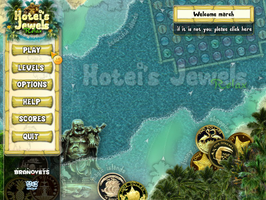
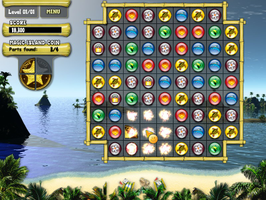

Hoteis Jewels - Relax
Dieser Artikel wurde für die folgenden Ubuntu-Versionen getestet:
Ubuntu 16.04 Xenial Xerus
Ubuntu 14.04 Trusty Tahr
Zum Verständnis dieses Artikels sind folgende Seiten hilfreich:
Hotei’s Jewels: Relax  ist ein Puzzlespiel. Es gilt die auf dem Spielfeld verteilten Motivsteine auszutauschen. Hierzu kann ein angrenzender Stein angewählt werden, um die Motive horizontal oder vertikal mindestens zu einer Dreierkette zu kombinieren. Die kombinierten Steine verschwinden, und neue Motive rutschen von oben ins Spielfeld hinein. Für jeden entfernten Stein erhält man Punkte. Im Verlauf des Spiels fallen Teile einer Münze herab. Diese müssen unten aus dem Spielfeld herausfallen, um das Level beenden zu können. Es müssen alle auf den Inseln verteilten magischen Münzen gesammelt und an Hotei übergeben werden.
ist ein Puzzlespiel. Es gilt die auf dem Spielfeld verteilten Motivsteine auszutauschen. Hierzu kann ein angrenzender Stein angewählt werden, um die Motive horizontal oder vertikal mindestens zu einer Dreierkette zu kombinieren. Die kombinierten Steine verschwinden, und neue Motive rutschen von oben ins Spielfeld hinein. Für jeden entfernten Stein erhält man Punkte. Im Verlauf des Spiels fallen Teile einer Münze herab. Diese müssen unten aus dem Spielfeld herausfallen, um das Level beenden zu können. Es müssen alle auf den Inseln verteilten magischen Münzen gesammelt und an Hotei übergeben werden.
|  |  |
| Menü | Spielszene |
Installation¶
Vorbereitung¶
Zuerst müssen die folgenden Pakete installiert [5] werden:
libsdl1.2debian:i386
libsdl-image1.2:i386
 mit apturl
mit apturl
Paketliste zum Kopieren:
sudo apt-get install libsdl1.2debian:i386 libsdl-image1.2:i386
sudo aptitude install libsdl1.2debian:i386 libsdl-image1.2:i386
Spiel¶
Das Spiel von holarse-linuxgaming.de  oder wegroup.org herunterladen. Im nächsten Schritt wird das Archiv entpackt [1], z.B. nach ~/Spiele.
oder wegroup.org herunterladen. Im nächsten Schritt wird das Archiv entpackt [1], z.B. nach ~/Spiele.
Nun wechselt man in den Ordner hj und startet [2] das Spiel über den Befehl hj. Es empfiehlt sich, einen Menüeintrag [3] vorzunehmen.
Bedienung¶
Hinter den Menüpunkten verbirgt sich:
| Bedienung | |
| Menüpunkt | Beschreibung |
| "Play" | Spiel starten |
| "Level" | Auswahl des Levels |
| "Options" | Einstellungen am Sound und am Ton vornehmen sowie zwischen Fenster- und Vollbildmodus umschalten |
| "Help" | Hintergrundgeschichte und Spielbeschreibung |
Problemlösungen¶
64-Bit-System¶
Bei 64-Bit-Systemen muss das Paket
libsdl-image1.2:i386 (universe)
mit apturl
Paketliste zum Kopieren:
sudo apt-get install libsdl-image1.2:i386
sudo aptitude install libsdl-image1.2:i386
installiert [4] werden.
Hinweis:
Bei dem Paket muss es sich unbedingt um die 32-bit-Version handeln. Auch wenn auf einem 64-bit-System das Paket libsdl-image1.2 schon installiert ist, erkennt das Spiel dieses nicht!


Infobox¶
| Hotei’s Jewels: Relax | |
| Genre: | Puzzlespiel |
| Sprache: | |
| Veröffentlichung: | - |
| Entwickler: | Branovets Games |
| Systemvoraussetzungen: | - |
| Medien: | Download |
| Strichcode / EAN / GTIN: | - |
| Läuft mit: | nativ |

- Erstellt mit Inyoka
-
 2004 – 2017 ubuntuusers.de • Einige Rechte vorbehalten
2004 – 2017 ubuntuusers.de • Einige Rechte vorbehalten
Lizenz • Kontakt • Datenschutz • Impressum • Serverstatus -
Serverhousing gespendet von